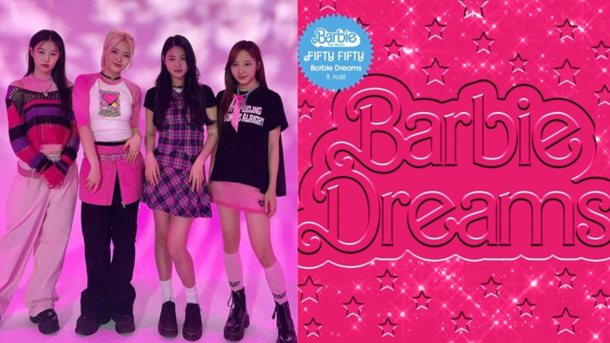
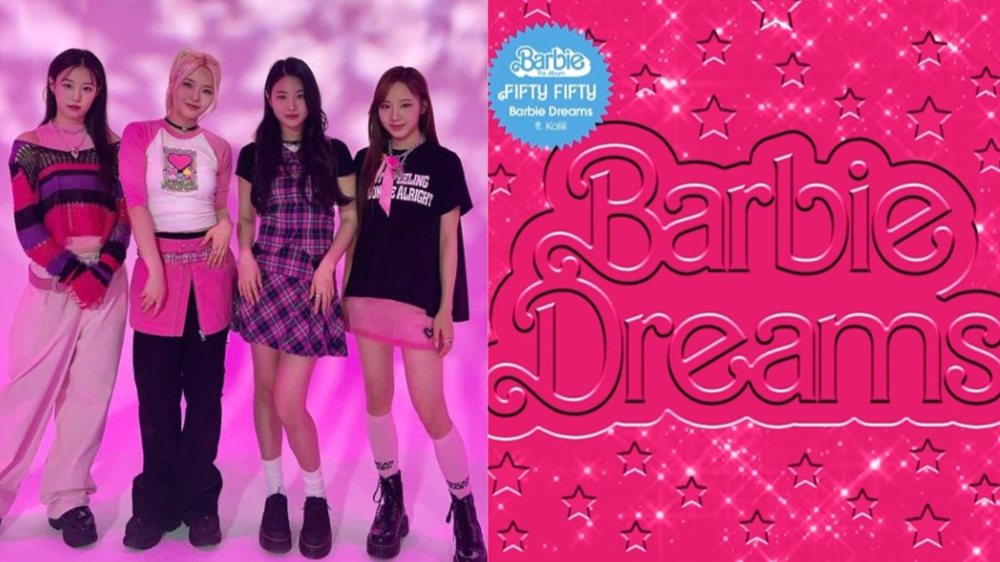

Dinny Mutiah - Liputan6
Diperbarui 26 Jul 2023, 11:56 WIB
Diterbitkan 26 Jul 2023, 11:19 WIB
Liputan6.com, Jakarta - Nasib buruk Fifty Fifty terus berlanjut setelah mereka terus bersengketa dengan agensi mereka,
ATTRAKT. Yang terbaru adalah lagu mereka yang semula akan menjadi salah satu soundtrack pengisi film Barbie
ternyata tak jadi digunakan.
Imbasnya, Koreaboo melaporkan, dikutip Rabu (26/7/2023), video musik lagu Barbie Dreams (feat Kaliii)
juga dibatalkan. Meski terjadi pembatalan, para penggemar berharap mereka setidaknya mendengarkan lagu
tersebut tetap diputarkan di dalam film. Namun, harapan itu sepertinya tidak juga terwujud.
Tatkala lagu Barbie World (with Aqua) yang dibawakan Nicki Minaj dan Ice Spice, serta What Was I Made For?
oleh Billie Eilish masuk daftar dalam kredit film, lagu Barbie Dreams tak berada di dalamnya.
Ini berarti lagu itu tak diputarkan di sepanjang film yang dikonfirmasi oleh sejumlah penggemar usai
menonton film Barbie. Banyak non-penggemar K-pop juga mengomentari hal tersebut. Meskipun ada kontroversi
untuk grup tersebut, ketidakikutsertaan mereka mungkin sebagian karena lagu mereka diumumkan begitu dekat
dengan perilisan film. Beruntung bagi penggemar grup, Fifty Fifty masih akan mendapatkan keajaiban Barbie — represi
soundtrack vinil edisi khusus terbaru memasukkan lagu "Barbie Dreams".

Dinny Mutiah - Liputan6
Diperbarui 26 Jul 2023, 11:56 WIB
Diterbitkan 26 Jul 2023, 11:19 WIB
ATTRAKT juga terus menekan Fifty Fifty dengan segala tindakan hukum. Pihak label K-pop telah mendapatkan lisensi
merek dagang Fifty Fifty di empat pasar musik K-Pop terbesar di dunia.
Pada 25 Juli 2023, Munhwa Ilbo melaporkan bahwa ATTRAKT sukses mendaftarkan dan memenangkan merek dagang nama grup
idol itu tersebut di Amerika Serikat, Inggris Raya, Jepang, dan China. Dengan penetapan merek dagang tersebut berarti
para member tidak akan dapat berpromosi dengan nama grup mereka saat ini tanpa izin dari ATTRAKT, meski mereka berhasil
menggugat untuk mengakhiri kontrak mereka.
Pengacara ATTRAKT, yang mengajukan merek dagang atas nama agensi, mengonfirmasi hal ini dalam sebuah wawancara dengan Munhwa
Ilbo.
"Negara hanya mengakui paten atau merek dagang yang mereka berikan. Dengan kata lain, (anggota FIFTY FIFTY) tidak akan dapat
berpromosi di AS atau Inggris Raya dengan merek dagang yang diperoleh di Korea. Terkait hal ini, kami telah mengajukan dan
memperoleh merek dagang (untuk FIFTY FIFTY) di empat negara, termasuk AS, Inggris, Jepang, dan China," kata pihak pengacara.
Dinny Mutiah - Liputan6
Diperbarui 26 Jul 2023, 11:56 WIB
Diterbitkan 26 Jul 2023, 11:19 WIB
Sementara, pihak ATTRAKT dan FIFTY FIFTY masih terlibat dalam pertarungan hukum atas penghentian kontrak eksklusif mereka
yang tertunda. Sebelumnya terungkap bahwa anggota keluarga FIFTY FIFTY telah mengajukan dan memperoleh merek dagang di
Korea untuk FIFTY FIFTY yang ditulis dalam bahasa Korea.
Di sisi lain, CEO The Giver Ahn Sung Il, yang dikenal sebagai produser Fifty Fifty, ketahuan telah berbohong.
Ia mengakui tudingan bohong soal pengakuannya terkait latar belakang pendidikannya.
Pada 25 Juli 2023, Sung Il mengaku bahwa ia telah berbohong sebagai lulusan Universitas Chung Ang.
"Aku sadar bahwa yang kuakui sebagai pendidikanku itu tak benar. Aku meminta maaf atau kebingungan yang
ditimbulkan dan aku akan memperbaikinya," ujarnya.
Sebelumnya, si produser menyebut nama kampus itu sebagai almamaternya dalam profilnya. Kontroversi mencuat
setelah pada 24 Juli 2023 terungkap bahwa Sung Il tidak terdaftar di direktori alumni sekolah. Warganet pun
mengecam si produser Fifty Fifty karena berbohong dan tanggapannya yang acuh tak acuh saat ketahuan.
Dinny Mutiah - Liputan6
Diperbarui 26 Jul 2023, 11:56 WIB
Diterbitkan 26 Jul 2023, 11:19 WIB
Pada akhir April 2023, lagu viral mereka, CUPID, dituduh plagiarisme oleh penyanyi Turki Evrencan Gündüz.
Secara khusus, Evrencan Gündüz menerbitkan unggahan Instagram, di mana ia memainkan CUPID berdampingan dengan
lagunya, Sen Askimizidan, yang dikalim menunjukkan kemiripan yang kuat.
"FIFTY FIFTY merilis lagu yang bagus. Mari kita dengarkan bersama : Tapi sepertinya familiar entah dari mana,"
tulis penyanyi tersebut dalam unggahan videonya, seperti dirangkum KBIZoom.
Secara khusus, bagian melodi dalam CUPID dinilai terdengar hampir persis sama dengan bagian pembuka dari
Sen Askimizidan. Bagian dari lagu K-pop itu disebut "sangat mirip" dengan tanda waktu 1:10 dan seterusnya
dari Sen Askimizidan.
Sebagai tanggapan, agensi grup ATTRAKT menyatakan bahwa mereka telah berbicara dengan produser asli lagu tersebut.
ATTRAKT menyatakan, "Kami memeriksa (fakta) dengan produser asli setelah media baru-baru ini menyebutkan tuduhan
plagiarisme terhadap CUPID FIFTY FIFTY."
"Kami menemukan bahwa produser asli bahkan tidak mengetahui lagu Turki yang dipermasalahkan. Ada kesamaan dalam hal
karakteristik musik pop, tapi menurut kami itu bukan plagiarisme," imbuh mereka.

Diperbarui 26 Jul 2023, 11:56 WIB
ATTRAKT juga terus menekan Fifty Fifty dengan segala tindakan hukum. Pihak label K-pop telah mendapatkan lisensi merek dagang Fifty Fifty di empat pasar musik K-Pop terbesar di dunia.
Pada 25 Juli 2023, Munhwa Ilbo melaporkan bahwa ATTRAKT sukses mendaftarkan dan memenangkan merek dagang nama grup idol itu tersebut di Amerika Serikat, Inggris Raya, Jepang, dan China. Dengan penetapan merek dagang tersebut berarti para member tidak akan dapat berpromosi dengan nama grup mereka saat ini tanpa izin dari ATTRAKT, meski mereka berhasil menggugat untuk mengakhiri kontrak mereka.
Pengacara ATTRAKT, yang mengajukan merek dagang atas nama agensi, mengonfirmasi hal ini dalam sebuah wawancara dengan Munhwa Ilbo.
"Negara hanya mengakui paten atau merek dagang yang mereka berikan. Dengan kata lain, (anggota FIFTY FIFTY) tidak akan dapat berpromosi di AS atau Inggris Raya dengan merek dagang yang diperoleh di Korea. Terkait hal ini, kami telah mengajukan dan memperoleh merek dagang (untuk FIFTY FIFTY) di empat negara, termasuk AS, Inggris, Jepang, dan China," kata pihak pengacara.
Diperbarui 26 Jul 2023, 11:56 WIB
Sementara, pihak ATTRAKT dan FIFTY FIFTY masih terlibat dalam pertarungan hukum atas penghentian kontrak eksklusif mereka yang tertunda. Sebelumnya terungkap bahwa anggota keluarga FIFTY FIFTY telah mengajukan dan memperoleh merek dagang di Korea untuk FIFTY FIFTY yang ditulis dalam bahasa Korea.
Di sisi lain, CEO The Giver Ahn Sung Il, yang dikenal sebagai produser Fifty Fifty, ketahuan telah berbohong. Ia mengakui tudingan bohong soal pengakuannya terkait latar belakang pendidikannya.
Pada 25 Juli 2023, Sung Il mengaku bahwa ia telah berbohong sebagai lulusan Universitas Chung Ang. "Aku sadar bahwa yang kuakui sebagai pendidikanku itu tak benar. Aku meminta maaf atau kebingungan yang ditimbulkan dan aku akan memperbaikinya," ujarnya.
Sebelumnya, si produser menyebut nama kampus itu sebagai almamaternya dalam profilnya. Kontroversi mencuat setelah pada 24 Juli 2023 terungkap bahwa Sung Il tidak terdaftar di direktori alumni sekolah. Warganet pun mengecam si produser Fifty Fifty karena berbohong dan tanggapannya yang acuh tak acuh saat ketahuan.
Diperbarui 26 Jul 2023, 11:56 WIB
Pada akhir April 2023, lagu viral mereka, CUPID, dituduh plagiarisme oleh penyanyi Turki Evrencan Gündüz. Secara khusus, Evrencan Gündüz menerbitkan unggahan Instagram, di mana ia memainkan CUPID berdampingan dengan lagunya, Sen Askimizidan, yang dikalim menunjukkan kemiripan yang kuat.
"FIFTY FIFTY merilis lagu yang bagus. Mari kita dengarkan bersama : Tapi sepertinya familiar entah dari mana," tulis penyanyi tersebut dalam unggahan videonya, seperti dirangkum KBIZoom.
Secara khusus, bagian melodi dalam CUPID dinilai terdengar hampir persis sama dengan bagian pembuka dari Sen Askimizidan. Bagian dari lagu K-pop itu disebut "sangat mirip" dengan tanda waktu 1:10 dan seterusnya dari Sen Askimizidan.
Sebagai tanggapan, agensi grup ATTRAKT menyatakan bahwa mereka telah berbicara dengan produser asli lagu tersebut. ATTRAKT menyatakan, "Kami memeriksa (fakta) dengan produser asli setelah media baru-baru ini menyebutkan tuduhan plagiarisme terhadap CUPID FIFTY FIFTY."
"Kami menemukan bahwa produser asli bahkan tidak mengetahui lagu Turki yang dipermasalahkan. Ada kesamaan dalam hal karakteristik musik pop, tapi menurut kami itu bukan plagiarisme," imbuh mereka.
Dinny Mutiah - Liputan6
Diperbarui 26 Jul 2023, 11:56 WIB
Diterbitkan 26 Jul 2023, 11:19 WIB
ATTRAKT juga terus menekan Fifty Fifty dengan segala tindakan hukum. Pihak label K-pop telah mendapatkan lisensi merek dagang Fifty Fifty di empat pasar musik K-Pop terbesar di dunia.
Pada 25 Juli 2023, Munhwa Ilbo melaporkan bahwa ATTRAKT sukses mendaftarkan dan memenangkan merek dagang nama grup idol itu tersebut di Amerika Serikat, Inggris Raya, Jepang, dan China. Dengan penetapan merek dagang tersebut berarti para member tidak akan dapat berpromosi dengan nama grup mereka saat ini tanpa izin dari ATTRAKT, meski mereka berhasil menggugat untuk mengakhiri kontrak mereka.
Pengacara ATTRAKT, yang mengajukan merek dagang atas nama agensi, mengonfirmasi hal ini dalam sebuah wawancara dengan Munhwa Ilbo.
"Negara hanya mengakui paten atau merek dagang yang mereka berikan. Dengan kata lain, (anggota FIFTY FIFTY) tidak akan dapat berpromosi di AS atau Inggris Raya dengan merek dagang yang diperoleh di Korea. Terkait hal ini, kami telah mengajukan dan memperoleh merek dagang (untuk FIFTY FIFTY) di empat negara, termasuk AS, Inggris, Jepang, dan China," kata pihak pengacara.
Dinny Mutiah - Liputan6
Diperbarui 26 Jul 2023, 11:56 WIB
Diterbitkan 26 Jul 2023, 11:19 WIB
Sementara, pihak ATTRAKT dan FIFTY FIFTY masih terlibat dalam pertarungan hukum atas penghentian kontrak eksklusif mereka yang tertunda. Sebelumnya terungkap bahwa anggota keluarga FIFTY FIFTY telah mengajukan dan memperoleh merek dagang di Korea untuk FIFTY FIFTY yang ditulis dalam bahasa Korea.
Di sisi lain, CEO The Giver Ahn Sung Il, yang dikenal sebagai produser Fifty Fifty, ketahuan telah berbohong. Ia mengakui tudingan bohong soal pengakuannya terkait latar belakang pendidikannya.
Pada 25 Juli 2023, Sung Il mengaku bahwa ia telah berbohong sebagai lulusan Universitas Chung Ang. "Aku sadar bahwa yang kuakui sebagai pendidikanku itu tak benar. Aku meminta maaf atau kebingungan yang ditimbulkan dan aku akan memperbaikinya," ujarnya.
Sebelumnya, si produser menyebut nama kampus itu sebagai almamaternya dalam profilnya. Kontroversi mencuat setelah pada 24 Juli 2023 terungkap bahwa Sung Il tidak terdaftar di direktori alumni sekolah. Warganet pun mengecam si produser Fifty Fifty karena berbohong dan tanggapannya yang acuh tak acuh saat ketahuan.
Dinny Mutiah - Liputan6
Diperbarui 26 Jul 2023, 11:56 WIB
Diterbitkan 26 Jul 2023, 11:19 WIB
Pada akhir April 2023, lagu viral mereka, CUPID, dituduh plagiarisme oleh penyanyi Turki Evrencan Gündüz. Secara khusus, Evrencan Gündüz menerbitkan unggahan Instagram, di mana ia memainkan CUPID berdampingan dengan lagunya, Sen Askimizidan, yang dikalim menunjukkan kemiripan yang kuat.
"FIFTY FIFTY merilis lagu yang bagus. Mari kita dengarkan bersama : Tapi sepertinya familiar entah dari mana," tulis penyanyi tersebut dalam unggahan videonya, seperti dirangkum KBIZoom.
Secara khusus, bagian melodi dalam CUPID dinilai terdengar hampir persis sama dengan bagian pembuka dari Sen Askimizidan. Bagian dari lagu K-pop itu disebut "sangat mirip" dengan tanda waktu 1:10 dan seterusnya dari Sen Askimizidan.
Sebagai tanggapan, agensi grup ATTRAKT menyatakan bahwa mereka telah berbicara dengan produser asli lagu tersebut. ATTRAKT menyatakan, "Kami memeriksa (fakta) dengan produser asli setelah media baru-baru ini menyebutkan tuduhan plagiarisme terhadap CUPID FIFTY FIFTY."
"Kami menemukan bahwa produser asli bahkan tidak mengetahui lagu Turki yang dipermasalahkan. Ada kesamaan dalam hal karakteristik musik pop, tapi menurut kami itu bukan plagiarisme," imbuh mereka.